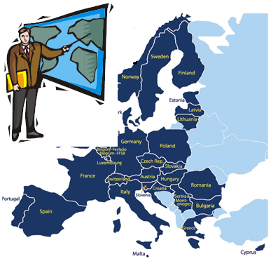

Outline
- What is UCITS?
>Before UCITS
>After UCITS
>Most common forms of UCITS: SICAVs and FCPs
>Main characteristics of SICAVs and FCPs
>Differences of SICAVs and FCPs

- After UCITS, EU member investors are able to invest their funds to different EU member countries.
All Funds which obey the UCITS directives can be called UCITS Funds.
- UCITS directives specifies:
Which securities (investments) allowed to be acquired?
What information must be provided to UCITS investors?
How UCITS Units and Shares can be bought and sold?
The two most well known funds that can be set up as UCITS funds are:
SICAV* and FCP**
*Société d’Investissement à Capital Variable (open-ended investment company)**Fonds Commun de Placement (common fund)
Main Differences